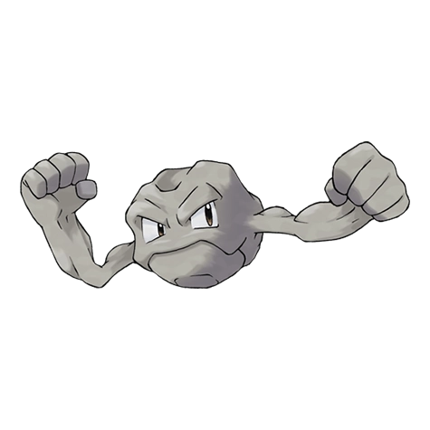

Назад
Джеодуд

Джеодуд — Покемон 1 поколения под номером 74 в Покедекс. Обитает он в регионе Канто и относится к Каменному и Земляному типу. Чем дольше живет Геодуд, тем больше у него по краям откалывается кусочков, что делает его более круглым и гладким. Однако, сердце этого Покемона остаётся твёрдым и грубым.
Тип:
Земляной
Каменный
Эволюция
# 074 Джеодуд
=>
# 075 Гравелер